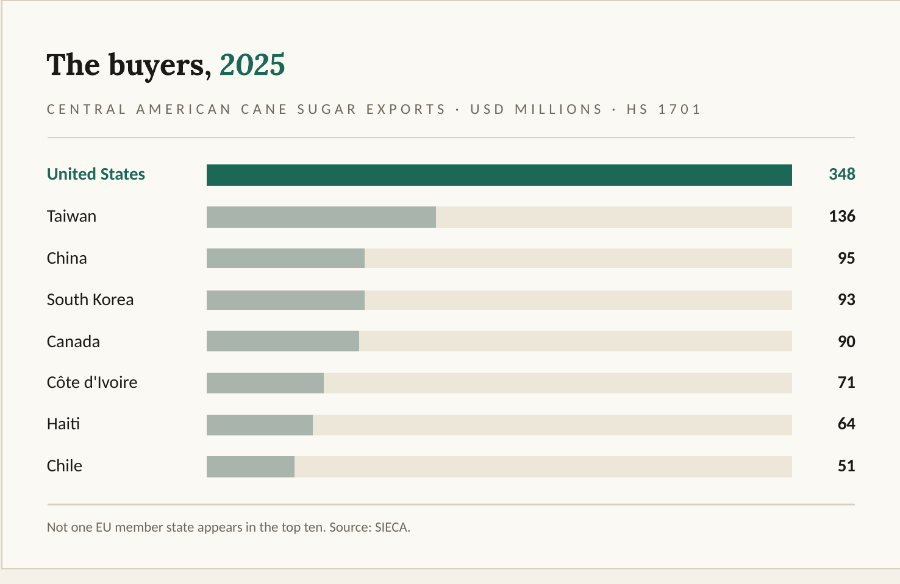
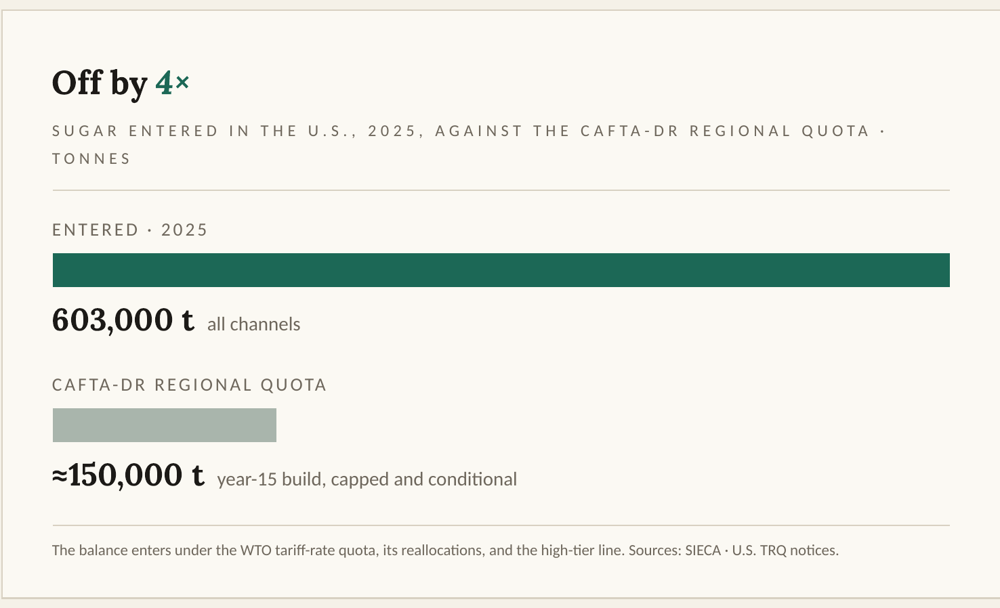
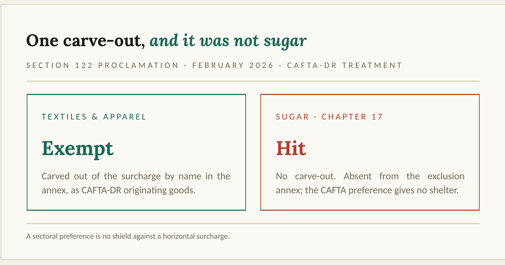

Most of the sugar Central America places in the United States does not enter under the CAFTA-DR preference. It enters under the WTO tariff-rate quota, its reallocations, and the high-tier line above it. That single fact reorders how an importer should read the February 2026 balance-of-payments surcharge, because the surcharge lands hardest on the low-duty entries the preference was supposed to protect.
The gulls at Puerto Corinto
The first time I understood how sugar leaves Central America, it was because of the seagulls.
I was at Puerto Corinto, on Nicaragua’s Pacific coast, on one of the visits I used to arrange to pull efficiencies out of the port administration. I went with my direct reports and with the customs broker, and when people came down from head office I would set up the meetings with the Port Director and the Customs Administrator. That day they walked us out to the yard to watch the operation. Over one of the ships there was a cloud of seagulls, wheeling and dropping toward the open hold, and they would not leave it alone.
I asked why. The dockworkers told me without ceremony, the way you explain something obvious: that is how sugar ships out. Loose, in bulk, poured into the hold, not stacked in sacks. I had the picture of the bagged pallet in my head, and I was looking at something else. I was looking at a commodity.
That detail decides more than it seems. Sugar that leaves loose in the belly of a bulk carrier is not a branded product headed for a supermarket shelf. It is raw material bound for a refinery somewhere else in the world, and most of what the region produces moves exactly this way. Corinto is Nicaragua’s main gateway to the sea, so this was not one unusual berth. It was simply how the sugar goes. The question a practitioner asks next is the one this article answers: which refineries does that sugar reach, through which legal door, and what happens when the largest market in the world sits next door and still charges you to come in.
Where the sugar goes
In 2025, according to SIECA, Central America shipped 1.52 billion dollars of cane sugar to the world. The United States took 348 million of that, just under 23 percent, and it was by a wide margin the single largest buyer. After the United States the destinations scatter in a way that surprised me the first time I read the list: Taiwan, China, South Korea, Canada, Côte d’Ivoire, Haiti, Mauritania, Chile, Libya. Read that against the gulls over the yard at Corinto and it holds together. These are refiners and deficit markets across Asia, West Africa, the Caribbean and the Southern Cone, buying raw sugar to process, not packaged sugar to put on a shelf.

One absence in that top ten is worth stopping on. Not a single European Union member state is in it. The EU–Central America Association Agreement opens duty-free sugar quotas that grow automatically every year, and still the sugar goes to Taiwan and to Haiti before it goes to Europe. A preference that exists on paper and a preference that actually moves cargo are two different things. That distance, measured this time on the United States side, is the subject of the rest of this piece.
Look only at the U.S. flow and the line refuses to sit still. Central America sent roughly 559,000 tonnes in 2021, 668,000 in 2022, 517,000 in 2023, then 784,000 in 2024 before falling back to about 603,000 in 2025. One market, and the volume swings by a quarter from one year to the next. That movement is not a story about how much cane the region managed to grow. It is a story about how the United States decides to let the sugar in.
The door it actually uses

Here is the part that surprises people who have never worked an entry. In 2025 Central America placed around 603,000 tonnes of sugar in the United States. The CAFTA-DR preferential sugar quota for the entire region, now at the end of its fifteen-year build, sits near 150,000 tonnes. The two figures are off by a factor of four. Most of that sugar does not come in through the CAFTA preference at all. It comes in through the WTO tariff-rate quota, through the reallocations of that quota, and over the high-tier line that sits above it. The trade agreement everyone names when they picture Central American sugar in the United States is not the main door the sugar walks through.
The machinery is worth setting out, because it is the machinery that governs. The WTO quota lives in Additional U.S. Note 5 to Chapter 17 of the HTSUS, with country allocations announced for each fiscal year, and raw cane sugar cannot even present itself against that quota without a Certificate of Quota Eligibility issued under USTR’s regulations and validated by the government of the exporting country. The CAFTA-DR quota is a separate channel with its own conditions. The duty-free quantities are capped and allocated per country, they are available only to the extent the exporting country runs a net trade surplus in sugar, and the United States reserved, in the text of the agreement itself, a compensation mechanism that lets it pay exporters in lieu of taking the physical sugar when its own market is heavy. Read plainly, the preference is a fixed, capped, conditional channel. It is not open access, and it never was.
The way the annual numbers jump tells you the same thing. The 784,000-tonne year in 2024 was not driven by an unusually good harvest. It was driven in Washington. Mexico came in short against its own access, the United States reallocated the WTO quota that went unused, and additional tonnage went to Guatemala, the largest producer in the region, which already sends most of its roughly 1.74 million tonnes north. The volume Central America places in the United States is governed by how the United States administers its quota, not by how much the region can plant and cut.
There is a detail here that matters to anyone who has ever defended an entry. Origin, for once, is not the hard part. Cane grown and harvested in the territory qualifies as wholly obtained, so the rule of origin is rarely where a sugar shipment gets stuck. Nor is the over-quota tariff a real door, because it was never phased down and it stays high enough to keep most sugar out. What decides a sugar entry is the quota itself: which line the shipment presents against, whether the exporting country qualifies for the preferential access that year, and who in Washington controls the allocation. That is the structure the February 2026 surcharge landed on.
A surcharge the preference does not stop
On February 20, 2026, the same day the Supreme Court struck down the tariffs the administration had built on emergency economic powers, the White House invoked Section 122 of the Trade Act of 1974, the balance-of-payments authority, and used it for the first time since the provision was written. The result was a flat ad valorem surcharge sitting on top of nearly every import that enters the United States. Central American sugar included.
I did what you do with a proclamation like this. I read the annex line by line. Cocoa is on the exclusion list. Coffee is on it. Whole chapters of chemicals, minerals and machinery are on it. Chapter 17, sugar, is not. And the one thing Central America was given in that proclamation, the single carve-out written for the region, went to textiles and apparel. The proclamation subjects preference-eligible goods to the surcharge unless a specific exception is written for them by name. Textiles got that exception. Sugar did not.

Read the consequence slowly, because it runs against instinct. The CAFTA sugar preference, the duty-free access everyone points to, does nothing against this surcharge. And because the high-tier over-quota wall was already prohibitive, the surcharge barely registers there. Where it bites is exactly the preferential and in-quota entries, the low-duty and zero-duty lines that were supposed to be the advantage. The measure lands hardest on the good entries, the ones a compliance team works hardest to qualify.
The specific number and the specific proclamation will not stand still, and this article deliberately does not turn on them. The Court of International Trade found the authority wanting in the spring, though it granted relief only to the companies that had sued, and the government’s appeal is live before the Federal Circuit. The measure carries its own statutory limits besides, since Section 122 caps both the rate and the duration of a surcharge. That is exactly why the durable point is not the rate. It is the structure. When the United States reaches for a horizontal, across-the-board instrument, a sectoral preference of the kind sugar enjoys does not shelter you. What decides your exposure is classification and refund mechanics, not the trade agreement.
What this means at the entry desk
None of this is abstract at the entry desk, and this is the part I would tell any importer who ships that sugar north, or any compliance team that inherits those entries.
Classify against the surcharge structure deliberately. Every entry presents either against the surcharge line in Chapter 99 or against an exception line that genuinely applies, and the difference is not a clerical choice. Guess a shipment into an exception it does not qualify for, and a recoverable duty becomes a penalty exposure under reasonable care.
Check Chapter 98 wherever the goods can carry it. The special classification provisions sit outside many horizontal measures, and sugar-bearing flows in and out of the United States are more common than the commodity’s image suggests.
Preserve drawback. A large share of surcharge duty paid can be recovered on sugar that is later exported or built into an exported product, and the claim window under 19 U.S.C. § 1313 runs five years from importation. The refund you can file in 2029 depends on the entry records, the inventory traceability and the export documentation you keep this year.
Protect protest and refund rights while the litigation runs. The CIT judgment reached only the plaintiffs before it, which means every other importer’s path to a refund runs through its own entries: monitor liquidation status, calendar the 180-day protest window under 19 U.S.C. § 1514, and where exposure is material, act before entries liquidate and the window closes.
And mind the quota calendar itself, because the surcharge changed none of it. In-quota treatment still depends on presentation against an open quota with a valid Certificate of Quota Eligibility, and the difference between an in-quota and an over-quota liquidation still dwarfs the surcharge.
Back to Corinto
Go back to Corinto, to the gulls over the yard and the sugar pouring loose into the hold. That sugar reaches the United States through a door most people misname, and it now carries a surcharge that the regional preference does not stop. For the grower and the cutter behind that cargo, none of this is an abstraction on a customs form. It is the price of getting into the market next door. The preference is real on paper. Whether it is worth anything at all depends on the quota, on the classification, and on who is holding the door.